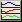

| Menu Exibir |
|
Essa opção permite ao usuário visualizar apenas um trecho da matriz de dados nos plotes do R_DAT.
- Selecione o
intervalo que deseja exibir, ajustando-o à parte visível do gráfico.
- Clique no menu “Exibir ► Exibição parcial”
ou no botão
na Barra de Ferramentas. Enquanto a
função
estiver ativada, o botão continuará pressionado.
Para desativar
a função, clique novamente no botão na
Barra de Ferramentas.
 , referente
à operação “Plotes
múltiplos”, permitindo visualizar até cinco parâmetros no
mesmo gráfico.
, referente
à operação “Plotes
múltiplos”, permitindo visualizar até cinco parâmetros no
mesmo gráfico.
-
Botão 
 |
Eventos |
Menu
Exibir |
 |